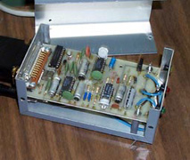

Alice is trying to find the PPS signal connector.
Last update:
Some radio clocks and related timekeeping gear have a pulse-per-second (PPS) signal that can be used to discipline the system clock to a high degree of precision, typically to the order less than 10 ms in time and 0.01 parts-per-million (PPM) in frequency. This page describes the hardware and software necessar for NTP to use this signal.
A Gadget Box built by Chuck HanavinThe PPS signal can be connected in either of two ways: via the data carrier detector (DCD) pin of a serial port or via the acknowledge (ACK) pin of a parallel port, depending on the hardware and operating system. Note that NTP no longer supports connection via the data leads of a serial port. However, the PPS signal levels are usually incompatible with serial port levels. The gadget box consists of a handful of electronic components assembled in a small aluminum box. It includes level converters and a optional modem designed to decode the radio timecode signals transmitted by Canadian time and frequency station CHU. This can be used with the Radio CHU Audio Demodulator/Decoder. A complete set of schematics, PCB artwork and drill templates can be obrtained via the web at gadget.tar.Z.
Both the serial and parallel port connection require operating system support, which is available in only a few operating systems, including FreeBSD, Linux (with PPSkit patch) and Solaris. Support on an experimental basis is available for several other systems, including SunOS and HP/Compaq/Digital Tru64. The PPSAPI application program interface defined in [1] is the only interface currently supported. Older PPS interfaces based on the ppsclock and tty_clk streams modules are no longer supported. As the PPSAPI is expected to become an IETF cross-platform standard, it should be used by new applications.
The entire PPS interface functionality is currently provided by inline code in the timepps.h header file. While not all implementations support the full PPSAPI specification, they do support all the functions required for the PPS driver described next. The FreeBSD, Linux and Solaris implementations can be used with the stock kernels provided with those systems; however, the Tru64 and SunOS kernels require additional functions not provided in the stock kernels. Solaris users are cautioned that these functions operate improperly in Solaris versions prior to 2.8 with patch Generic_108528-02. Header files for other systems can be found via the web at nanokernel.tar.gz.
In the preferred mode of operation, PPS signals are processed by the PPS Clock Discipline driver and other clock drivers which might be involved need not know or care about them. In some cases where there is no other driver, time might be obtained from remote NTP servers via the network and local PPS signals, for instance from a calibrated cesium oscillator, used to stabilize the frequency and remove network jitter. Note that the pps configuration command has been obsoleted by this driver.
The PPS driver operates in conjunction with a preferred peer, as described in the Mitigation Rules and the prefer Keyword page. One of the drivers described in the Reference Clock Drivers page or another NTP server furnishes the coarse timing and disambiguates the seconds numbering of the PPS signal itself. The NTP daemon mitigates between the clock driver or NTP server and the PPS driver as described in that page in order to provide the most accurate time, while respecting the various types of equipment failures that could happen.
Some Unix system kernels support a PPS signal directly, as described in the A Kernel Model for Precision Timekeeping page. Specifically, the PPS driver can be used to direct the PPS signal to the kernel for use as a discipline source for both time and frequency. The presence of the kernel support is automatically detected during the NTP build process and supporting code automatically compiled. Note that the PPS driver does not normally enable the PPS kernel code, since performance is generally better without it. However, this code can be enabled by a driver fudge flag if necessary.
Some configurations may include multiple radio clocks with individual PPS outputs. In some PPSAPI designs multiple PPS signals can be connected to multiple instances of the PPS driver. In such cases the NTP mitigation and grooming algorithms operate with all the radio timecodes and PPS signals to develop the highest degree of redundancy and survivability.